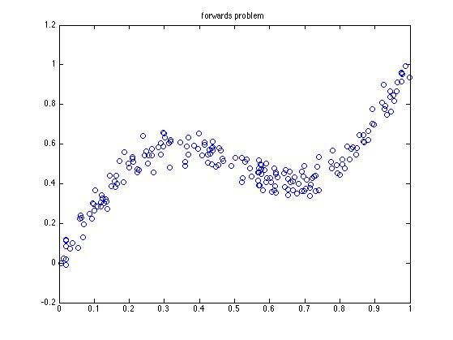
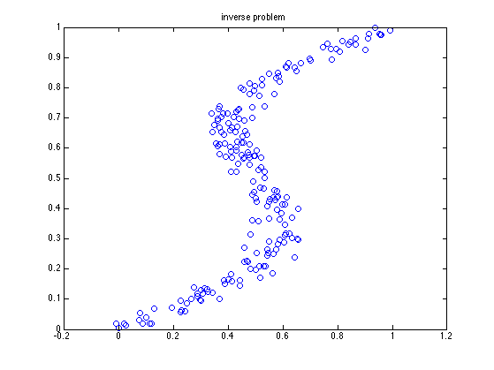
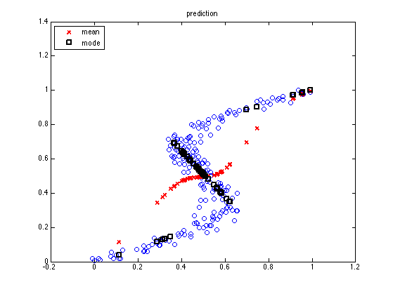
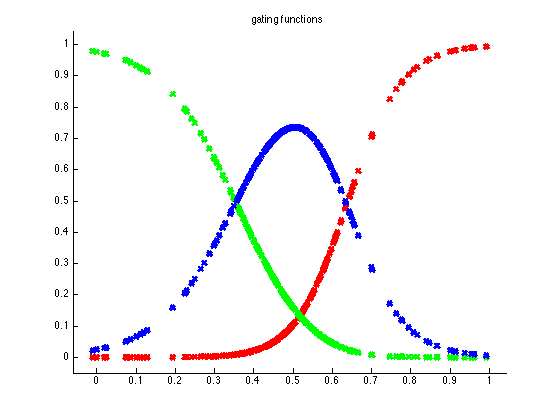
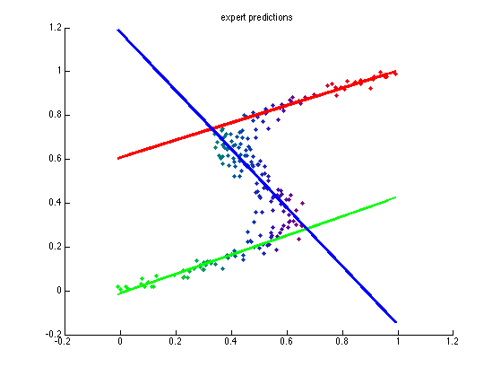

demo of mixture of linear regression experts on an inverse problem
Based on Bishop fig 5.21
% This file is from pmtk3.googlecode.com clear all close all setSeed(0); n = 200; y = rand(n,1); % eta = normrnd(0,0.05,n,1); eta = randn(n,1)*0.05; x = y + 0.3.*sin(2.*pi().*y) + eta; data = [x(:) y(:)]; K = 3; figure; plot(y, x, 'o', 'markersize', 6); title('forwards problem'); printPmtkFigure(sprintf('mixexpOneManyFwds')) figure; plot(x, y, 'o', 'markersize', 6); title('inverse problem'); printPmtkFigure(sprintf('mixexpOneManyInverse')) N = size(data,1); ndx = 1:1:N; X = data(ndx,1); y = data(ndx,2); %xtest = colvec(linspace(min(X), max(X), 200)); xtest = colvec(x); ytest = colvec(y); fixmix = 0; model = mixexpFit(X, y, K, 'fixmix', fixmix, 'EMargs', ... {'verbose', false, 'nrandomrestarts', 3}); [mu, v, post, muk, vk] = mixexpPredict(model, xtest); map = maxidx(post,[],2); for i=1:numel(xtest) yhat(i) = muk(i,map(i)); end figure; plot(X, y, 'o', 'markersize', 6); hold on ndx = 1:4:numel(xtest); h(1)=plot(xtest(ndx), mu(ndx), 'rx', 'linewidth', 2); title(sprintf('prediction')) h(2)=plot(xtest(ndx), yhat(ndx), 'ks', 'linewidth', 2); legend(h,'mean', 'mode', 'location','northwest') printPmtkFigure(sprintf('mixexpOneManyMu')) colors = [1 0 0; 0 1 0; 0 0 1; 1 1 0; 0 1 1; 1 0 1; 0 0 0]; figure; hold on for k=1:K plot(xtest, post(:,k), 'x', 'color', colors(k,:), 'linewidth', 3); end title(sprintf('gating functions')) axis_pct printPmtkFigure(sprintf('mixexpOneManyGating')) % Plot points with responsibilities represented by shading %PMTKauthor Catherine Gamroth % figure; hold on; W = model.Wy; v = model.Wq; r = post; t= ytest; for i=1:numel(xtest) c = repmat(r(i,:)',1,3); c = sum(c.*colors(1:K,:)); for g=i:3 if c(1,g) >=1 c(1,g) = 1; end if c(1,g) <=0 c(1,g) = 0; end if c(1,g) < 2 c(1,g) = c(1,g); else c(1,g) = 0; end end plot(x(i),t(i),'d','Color',c,'MarkerFaceColor', c, 'MarkerSize', 5); end % Plot Experts for k=1:K plot(xtest, muk(:,k), 'Color', colors(k,:), 'linewidth', 2); end title('expert predictions') printPmtkFigure(sprintf('mixexpOneManyExperts')) placeFigures    